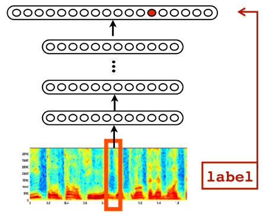
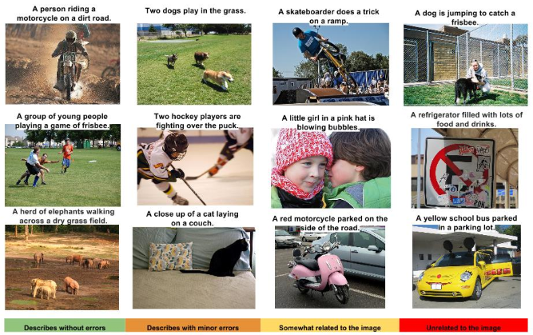
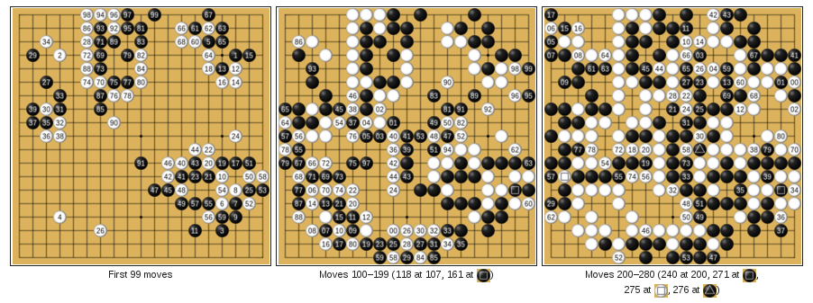
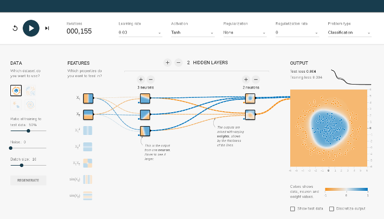
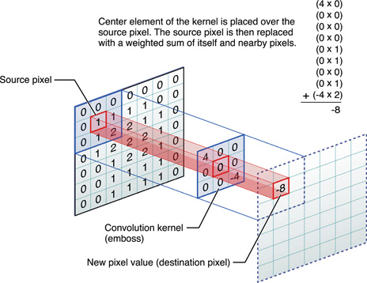
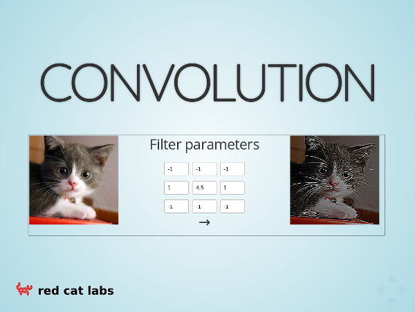
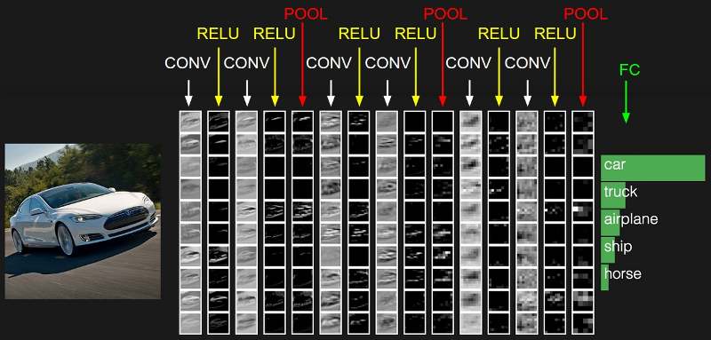
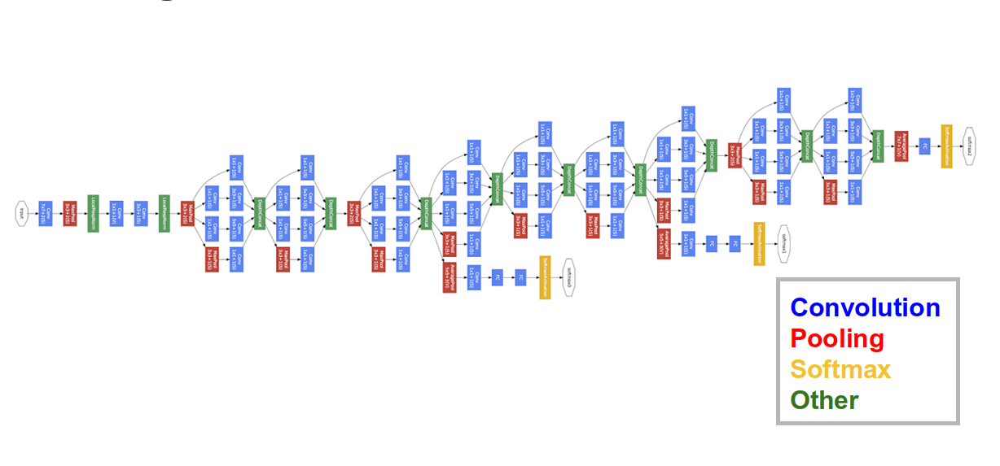
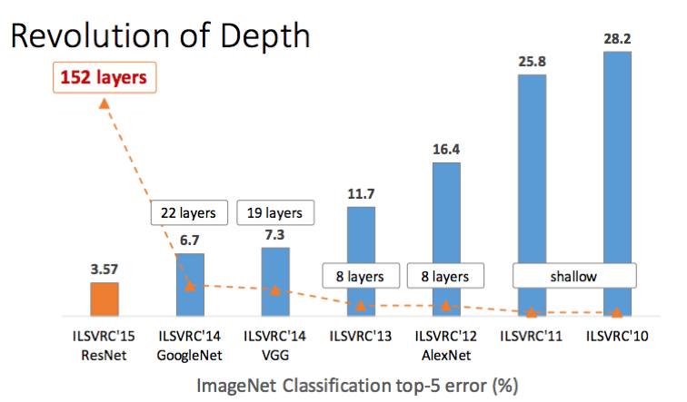
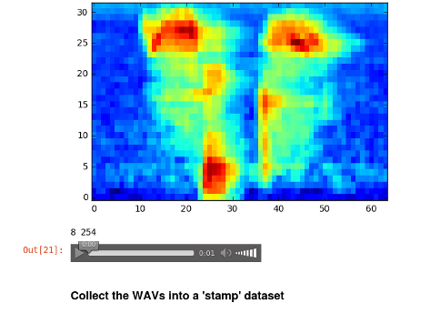

Deep Learning Workshop
FOSSASIA 2017
Martin Andrews @ redcatlabs.com
18 March 2017
About Me
- Machine Intelligence / Startups / Finance
-
- Moved from NYC to Singapore in Sep-2013
- 2014 = 'fun' :
-
- Machine Learning, Deep Learning, NLP
- Robots, drones
- Since 2015 = 'serious' :: NLP + deep learning
-
- & Papers...
What can be done now
- Speech recognition
- Language translation
- Vision :
-
- Object recognition
- Automatic captioning
- Reinforcement Learning
Speech Recognition
Android feature since Jellybean (v4.3, 2012) using Cloud
Trained in ~5 days on 800 machine cluster
Embedded in phone since Android Lollipop (v5.0, 2014)
Translation
Google's Deep Models are on the phone
"Use your camera to translate text instantly in 26 languages"
Translations for typed text in 90 languages
House Numbers
Google Street-View (and ReCaptchas)

Image Classification

(now better than human level)
Captioning Images
Some good, some not-so-good
Reinforcement Learning
Google DeepMind's AlphaGo
Learn to play Go from (mostly) self-play
Basic Approach
- Same as original Neural Networks since 1980s
- Simple mathematical units ...
- ... combine to compute a complex function
Single "Neuron"

Change weights to change output function
Multi-Layer
Layers of neurons combine and
can form more complex functions

Workshop : Neurons and Features
-
- Go to the Javascript Example : TensorFlow
(or search online for TensorFlow Playground)
TensorFlow Playground
Things to Understand
- Hands-on :
-
- Goal : learning to predict regions
- Input features
- What a single neuron can learn
- The blame game
- How deep networks 'create' features
Image Classification

In 2012, Deep Learning started to beat other approaches...
What is a CNN?
- Pixels in an images are 'organised' :
-
- Up/down left/right
- Translational invariance
- Idea : Use whole image as feature
-
- Update parameters of 'Photoshop filters'
- Mathematical term : 'convolution kernel'
-
- CNN = Convolutional Neural Network
CNN Filter
Play with a Filter
CNN Flow
Image Competition
- ImageNet aka ILSVRC
- over 15 million labeled high-resolution images...
- ... in over 22,000 categories
More Complex Networks
GoogLeNet (2014)
3-ImageNet-googlenet
- Play with a pre-trained network
Workshop : VirtualBox
- Import Appliance '
fossasia ... .OVA' - Start the Virtual Machine...
Workshop : Jupyter
- On your 'host' machine
- Go to
http://localhost:8080/
VM : SSH
From your 'host' machine :
ssh -p 8282 user@localhost
VM : Console
Login: user
Password: password
#...
./run-jupyter.bash
#....
Workshop : TensorBoard
- On your 'host' machine
- Go to
http://localhost:8081/
... Even More Complex

Google Inception-v3 (2015)
... and Deeper
Microsoft ResNet (2015)
More CNNs ?
- Since CNNs are good at images ...
- ... make everything into images
Let's Abuse a CNN
- For example : Speech Recognition
- Make this into an Image Recognition task
Speech Data 'stamps'
'speech/SpeechRecognition_Data.ipynb'
CNN Speech Recognition
'speech/SpeechRecognition_Learn.ipynb'
stamps.shape: (31, 64, 32)
labels.shape: (31,)
batch_input_fn sizing : (31, 64, 32, 1)
INFO:tensorflow:Starting evaluation at 2017-03-18-04:31:04
INFO:tensorflow:Evaluation [1/1]
INFO:tensorflow:Finished evaluation at 2017-03-18-04:31:05
{'accuracy': 1.0, 'loss': 0.0068151536, 'global_step': 3830}
Wrap-up
- Deep Learning may deserve some hype...
- Field is advancing very rapidly
- Having a GPU is VERY helpful
* Please add a star... *
Deep Learning
MeetUp Group
- Next Meeting = 20-March-2017
-
- Hosted by Google
- Typical Contents :
-
- Talk for people starting out
- Something from the bleeding-edge
- Lightning Talks
- MeetUp.com / TensorFlow-and-Deep-Learning-Singapore
10-week Deep Learning
Developer Course
- Plan : Start ~June
- Weekly 3-hour sessions will include :
-
- Instruction
- 4 structured projects
- 2 self-directed projects
- Cost: S$TBD
- Expect to work hard...
- QUESTIONS -
Martin.Andrews @
RedCatLabs.com
My blog : http://mdda.net/
GitHub : mdda